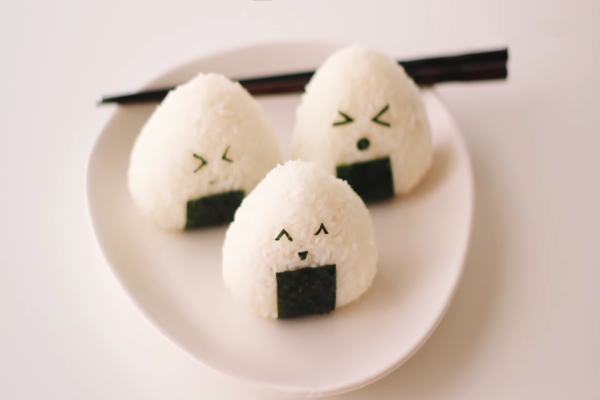
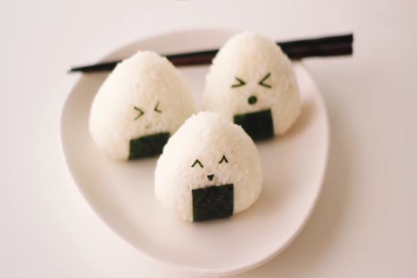

asian-rice ball
These are the cutest little rice ball snacks! We love onigiri because they are so easy to adapt to your own flavour combinations, and a great way to use up leftover ingredients. 
These are the cutest little rice ball snacks! We love onigiri because they are so easy to adapt to your own flavour combinations, and a great way to use up leftover ingredients. 